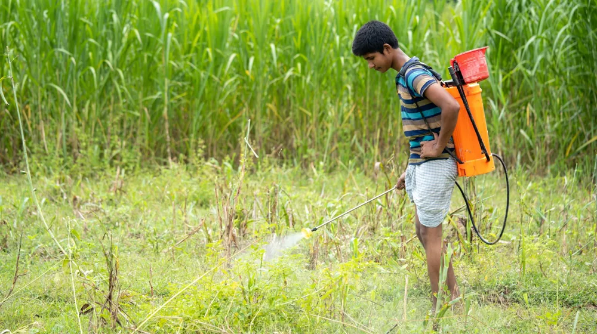

귀농귀촌 지원금, 놓치지 마세요! 유형별 조건과 신청 완벽 가이드
사진: zeynep ışık / Pexels (무료 이미지, 출처 표기)
귀농귀촌 지원금, 누가 신청할 수 있을까요? 핵심 자격 요건

귀농귀촌을 계획 중이신가요? 막막하게 느껴지는 초기 정착 비용 때문에 고민이라면, 정부와 지자체에서 제공하는 다양한 지원금이 큰 도움이 될 수 있습니다. 어떤 지원금이 나에게 맞는지, 어떻게 신청해야 하는지 막막하다면, 이 글을 통해 성공적인 귀농귀촌의 첫 단추를 끼워보세요. 놓치면 아쉬울 지원금 정보와 신청 노하우를 한눈에 정리해 드립니다.
귀농귀촌 지원금은 크게 '귀농인'과 '귀촌인'으로 구분하여 대상 자격을 심사합니다. 두 가지 유형 모두 기본적으로 농촌 외의 지역에서 농촌으로 이주한 이력을 요구하지만, 주된 활동 목적에 따라 세부 자격 요건이 달라집니다.
- 귀농인: 농촌 외의 지역에 거주하다가 농업을 목적으로 농촌 지역으로 이주하여 농업에 종사하거나 하고자 하는 자를 말합니다. 보통 농촌 지역 전입일로부터 5년 이내, 만 65세 이하 등의 연령 및 거주 기간 제한이 따릅니다.
- 귀촌인: 농촌 외의 지역에 거주하다가 농촌 지역으로 이주열다섯 자 중 귀농인이 아닌 자를 통칭합니다. 농업 외의 다른 직업을 갖거나 은퇴 후 전원생활을 즐기려는 경우 등이 해당합니다.
대부분의 지원금은 '귀농인'을 대상으로 하며, 일정 시간 이상의 농업 교육 이수(예: 100시간 이상)를 필수 조건으로 요구합니다. 각 지원 사업 및 지자체에 따라 구체적인 나이, 거주 기간, 교육 이수 시간 등 추가 자격 요건이 상이하므로, 반드시 해당 연도의 사업 지침을 확인해야 합니다.
주요 귀농귀촌 지원금, 어떤 종류가 있을까?
귀농귀촌 지원금은 크게 농업 창업을 돕는 자금, 주택 마련을 지원하는 자금, 그리고 안정적인 정착을 위한 정착 지원금 등으로 나눌 수 있습니다. 이 중 농림축산식품부에서 주관하는 주요 정책자금을 중심으로 살펴보겠습니다.
위 표에 제시된 내용은 매년 사업 지침에 따라 변경될 수 있으므로, 신청 전 반드시 농림축산식품부 또는 귀농귀촌종합센터 홈페이지에서 최신 정보를 확인해야 합니다. 또한, 지자체별로 자체적인 귀농귀촌 지원 사업(정착 지원금, 교육훈련비 지원 등)을 운영하는 경우가 많으니, 희망하는 지역의 시·군청 또는 귀농귀촌지원센터에 문의해 보세요.
나에게 맞는 지원금 선택 전략과 주의할 점
다양한 귀농귀촌 지원금 중에서 나에게 가장 적합한 것을 선택하기 위해서는 자신의 상황과 계획을 면밀히 검토해야 합니다. 무작정 지원금을 신청하기보다는 다음 전략을 고려해 보세요.
- 사업 계획 명확화: 어떤 작물을 재배할지, 어떤 가축을 키울지, 규모는 어느 정도인지 등 구체적인 영농 계획이 필요합니다. 이에 따라 필요한 자금의 종류와 규모가 달라지기 때문입니다.
- 자금 용도에 따른 선택: 농업 창업 자금이 필요한지, 주택 마련이 급한지, 아니면 초기 정착 생활비 지원이 필요한지에 따라 적절한 지원금을 선택해야 합니다. 예를 들어, 청년농업인이라면 영농정착 지원사업을 우선 고려할 수 있습니다.
- 지역별 특화 사업 확인: 각 지자체는 인구 유입 및 지역 활성화를 위해 다양한 특화 사업을 운영합니다. 귀농귀촌을 희망하는 지역의 특성과 연계된 지원 사업이 있는지 반드시 확인하세요. 이는 지역 정착에 큰 도움이 될 수 있습니다.
- 중복 수혜 여부 확인: 일부 지원금은 다른 지원금과 중복 수혜가 제한될 수 있습니다. 신청 전에 중복 지원 가능 여부를 명확히 확인하여 불이익을 받지 않도록 주의해야 합니다.
- 상환 능력 고려: 정책자금 대출은 낮은 이율이 장점이지만, 결국 상환해야 하는 자금입니다. 자신의 소득 및 상환 계획을 현실적으로 평가하여 무리한 대출을 피하는 것이 중요합니다.
귀농귀촌 지원금, 이렇게 신청하세요! 단계별 가이드
귀농귀촌 지원금을 신청하는 과정은 크게 정보 탐색, 교육 이수, 사업 계획서 작성, 신청 및 심사, 그리고 자금 집행 단계로 진행됩니다. 각 단계를 차근차근 따라가면 성공적인 신청에 한 발짝 다가설 수 있습니다.
성공적인 귀농귀촌을 위한 추가 팁
지원금만으로 귀농귀촌의 모든 문제가 해결되는 것은 아닙니다. 성공적인 정착을 위해서는 자금 외적인 부분에서도 꾸준한 노력이 필요합니다. 다음 팁들을 참고하여 안정적인 귀농귀촌 생활을 계획해 보세요.
- 현지 답사 및 장기 체류 경험: 정착하고 싶은 지역의 기후, 토양, 주요 작목, 주민 정서 등을 충분히 파악해야 합니다. 단기 체류 프로그램이나 한 달 살기 등을 통해 미리 경험해 보는 것이 중요합니다.
- 지역 주민과의 소통 및 교류: 새로운 환경에 적응하고 안정적으로 정착하기 위해서는 지역 주민과의 원활한 소통이 필수적입니다. 봉사활동이나 마을 행사 참여 등을 통해 관계를 맺고 정보를 얻는 것이 좋습니다.
- 멘토링 및 네트워크 구축: 먼저 귀농귀촌한 선배들의 경험은 값진 자산이 됩니다. 귀농귀촌 관련 커뮤니티나 멘토링 프로그램을 활용하여 실질적인 조언과 정보를 얻고, 유사한 경험을 가진 사람들과 네트워크를 구축하세요.
- 지속적인 학습과 유연한 태도: 농업 기술은 계속 발전하며, 예측 불가능한 변수들이 많습니다. 끊임없이 배우고 변화에 유연하게 대처하는 자세가 필요합니다. 초기에는 예상치 못한 어려움에 직면할 수 있음을 인지하고 대비하는 것이 중요합니다.
귀농귀촌은 새로운 삶의 시작이자 도전입니다. 철저한 준비와 적극적인 자세로 정부와 지자체의 지원을 현명하게 활용한다면, 성공적인 귀농귀촌의 꿈을 이룰 수 있을 것입니다.
🔗 이 글도 함께 보면 좋아요: 야구 포수 프레이밍 뜻 효과 중요성 완벽 가이드